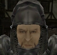
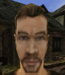

Лотар:
Стой чужеземец!
Лотар:
Я Лотар. Паладин Короля и преданный слуга Инноса.
Наш командующий, лорд Хаген, вверил мне задачу объяснять всем новоприбывшим новые законы, которым должны подчиняться все жители этого города.
Безымянный:
(легкий вздох) Хорошо - объясни мне законы этого города!
Лотар:
Во-первых, достопочтенный паладин лорд Хаген расквартирован в верхнем квартале, вместе со своими войсками.
Вот почему доступ в верхнюю часть города разрешен только уважаемым горожанам. Во-вто....
Безымянный:
(перебивает) Что мне нужно сделать, чтобы получить доспехи как у тебя?
Лотар:
(напыщенно) Что? Ты даже не являешься членом ополчения!
Ты даже НЕ ГРАЖДАНИН! Как ты даже думать смеешь о том, чтобы носить доспехи ПАЛАДИНА?